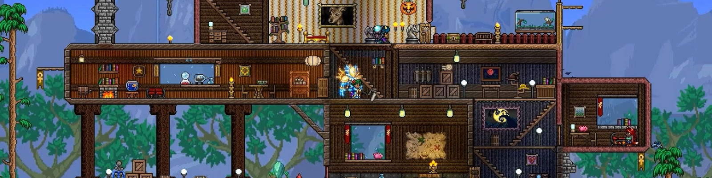

TERRARIA
Terraria is an independent action-adventure RPG video game produced by game developer Re-Logic. It features exploration, crafting, building structures and fighting dangerous monsters in a procedurally generated 2D world. Released on May 16, 2011, the game continued to receive free content updates until the year 2022, when its "last update", 'Labor of Love' was released. The game is estimated to have sold 50,000 copies on launch day, with over 17,000 players online at the same time. The game was positively received by critics.